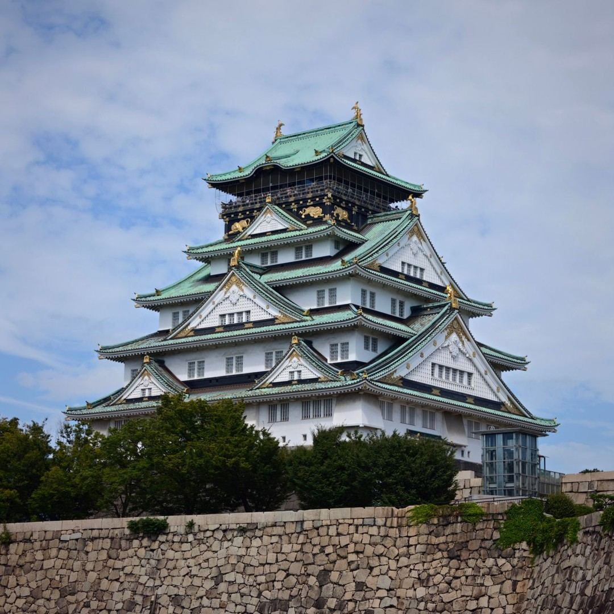
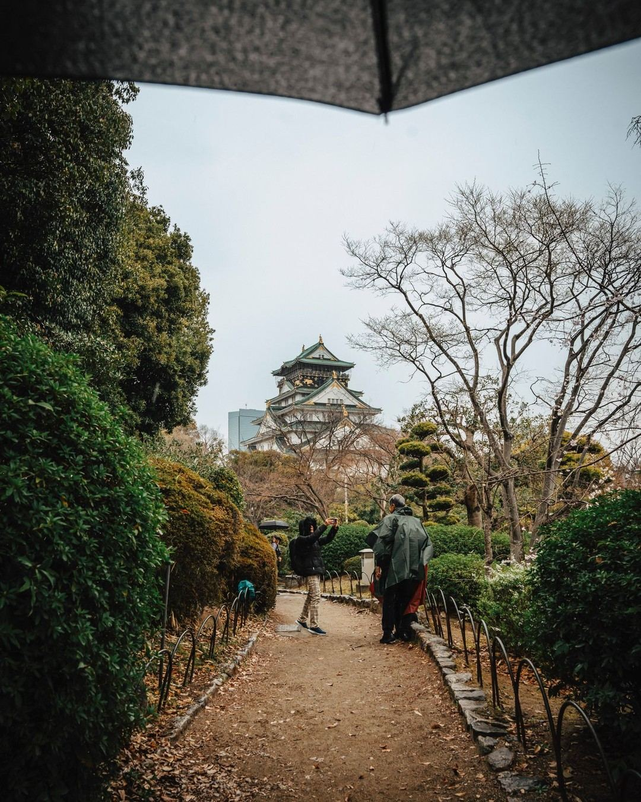
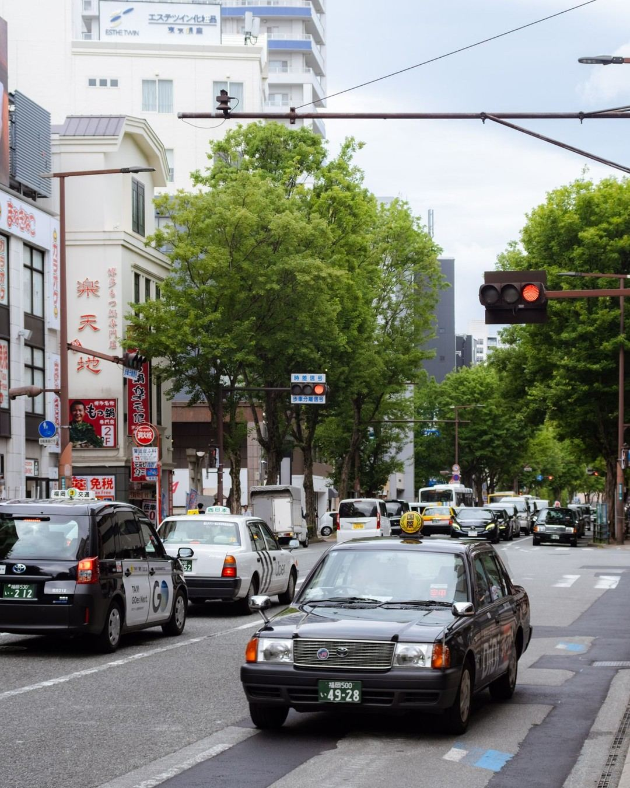
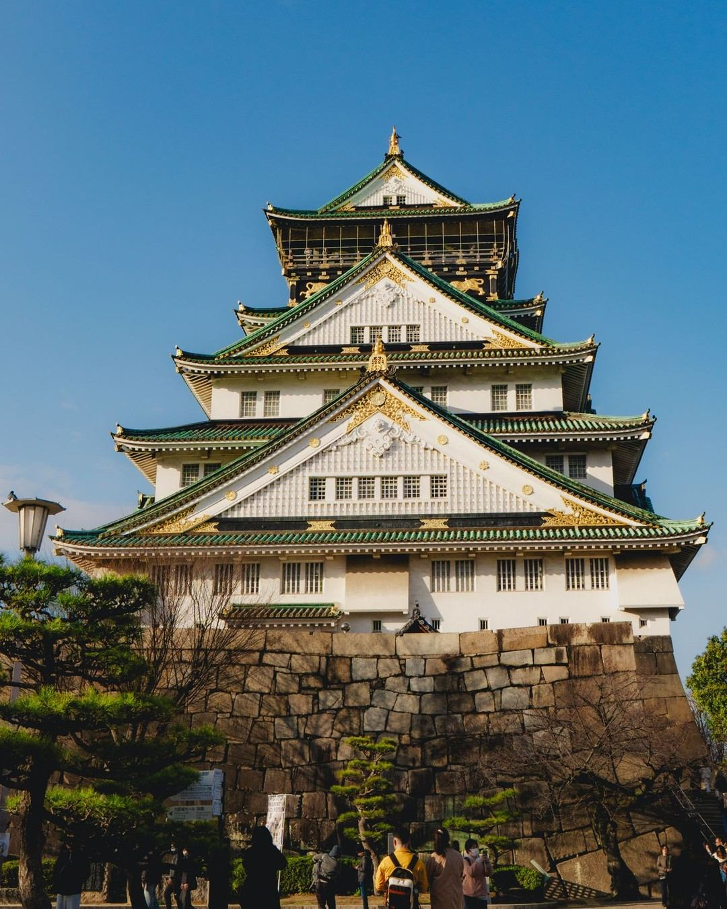
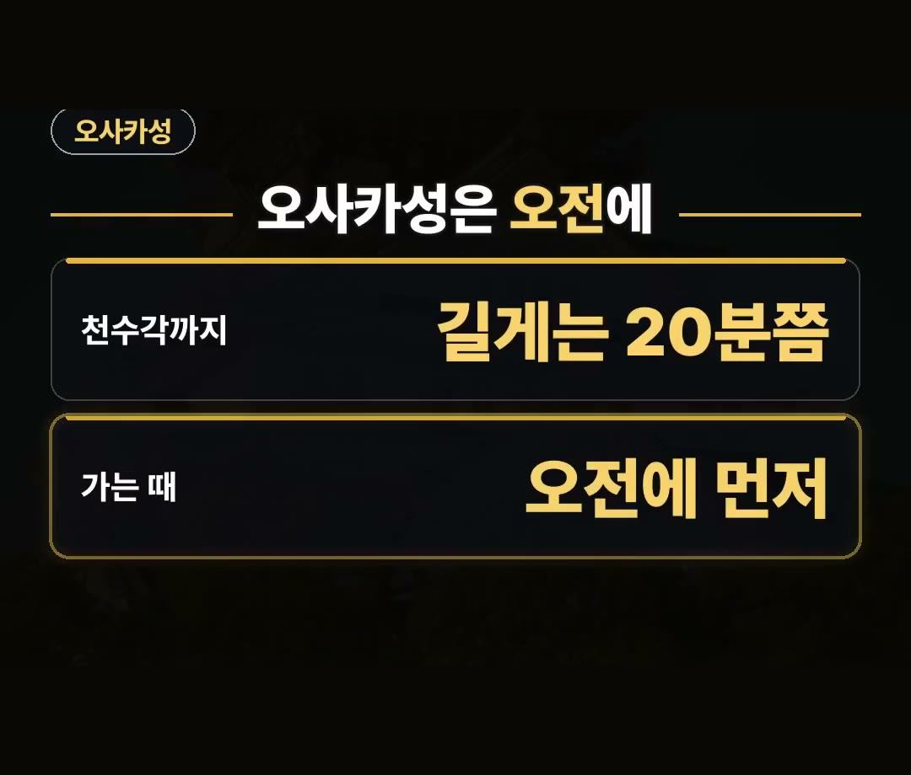
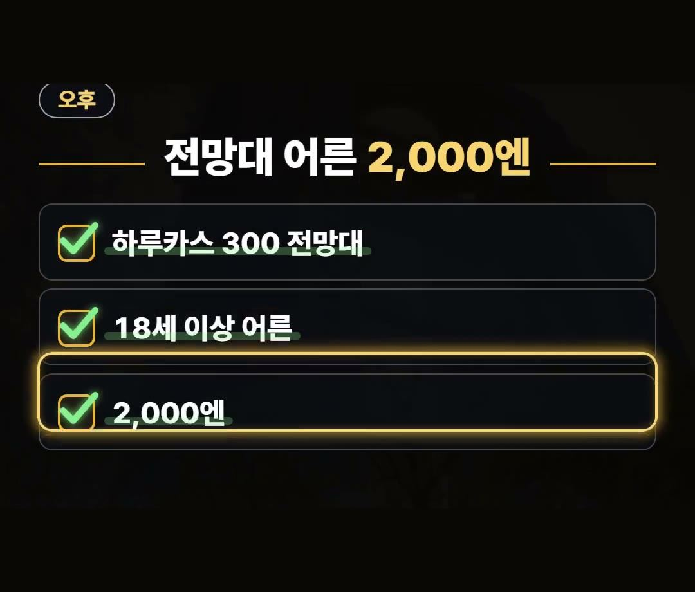
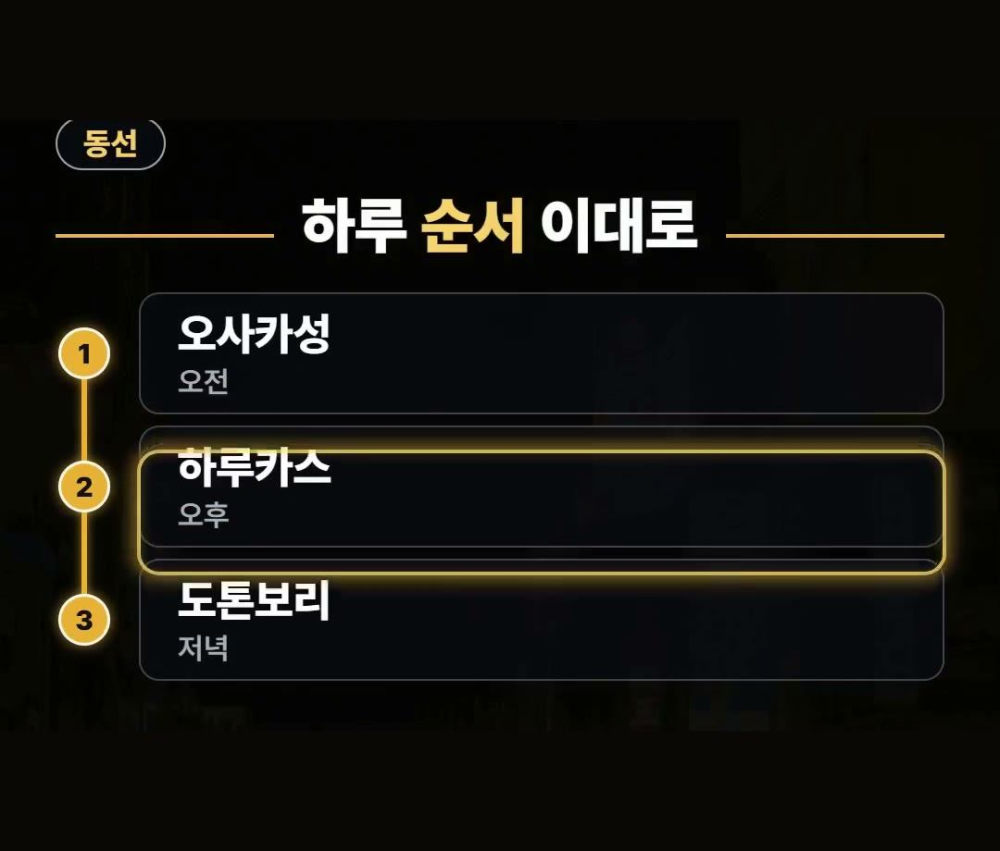
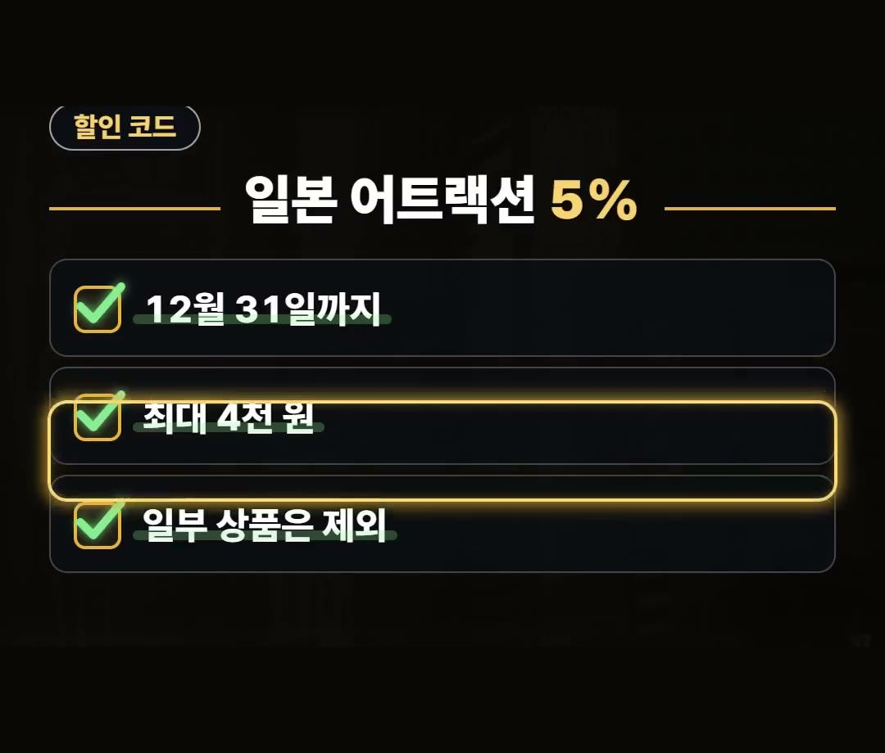

오사카 여행 코스, 오사카성을 오전에 넣어야 하는 이유
※ 이 글에는 제휴 링크가 포함되어 있으며, 링크를 통해 예약·구매하시면 일정 수수료를 받을 수 있습니다. (가격은 같습니다)
※ 이 포스팅은 쿠팡 파트너스 활동의 일환으로, 이에 따른 일정액의 수수료를 제공받습니다.
오사카 여행 코스를 준비할 때 오전과 오후, 저녁의 방문 명소 순서를 어떻게 구성하느냐에 따라 하루 동안 이동할 때 체력 부담이 달라질 수 있습니다.
오사카는 하루 동선을 계획할 때 많이 걷는 장소를 어느 시간에 배치하느냐가 중요한 포인트가 됩니다.

오사카성 천수각까지는 가까운 JR역에서 내려도 길게는 20분쯤 걸어야 해요.
체력이 덜 지친 오전에 오사카성을 먼저 방문하는 일정을 추천합니다! 🚶
오사카 여행 코스 동선 잡는 방법

오사카 하루 코스는 기본적으로 많이 걷는 장소부터 순서를 잡는 방식이 좋습니다.
오사카성 걷는 시간을 잘 모르면 이동 동선이 꼬이기 쉽습니다.

걷는 시간은 오사카관광국 안내 기준이며 요금은 2026년 10월 공식 안내 기준이므로 떠나기 전에 다시 확인해 보는 것이 필요합니다.

오사카 여행 코스 지도 확인하며 계획하기
첫 순서로 방문하기 좋은 곳은 오사카성입니다.
가까운 제이알 역에서 내려도 천수각까지 길게는 20분쯤 걸어야 하기 때문에, 상대적으로 덜 지친 오전에 먼저 방문하는 순서를 권합니다.

이러한 이동 거리를 오사카 여행 코스 지도 상에서 미리 체크해 두면 하루 일정을 보다 수월하게 구성할 수 있습니다.
오사카 여행 코스 2박 3일 일정 추천
오후 일정으로는 하루카스 300 전망대로 이동하는 동선이 적절합니다.
하루카스 300 전망대의 요금은 2026년 10월 기준 공식 안내에 따라 18세 이상 어른 2,000엔으로 확인됩니다.

오사카 여행 코스 2박 3일 일정을 계획할 때도 이처럼 주요 전망대와 명소의 공식 요금 및 위치를 미리 확인해 두면 차질 없이 이동할 수 있습니다.
오사카 여행 코스 3박 4일 저녁 마무리
저녁에는 도톤보리로 이동하는 순서입니다.
돈보리 리버 크루즈는 소요 시간이 약 20분이라 하루의 끝에 넣기 좋은 코스입니다.

정리해 보면 하루 순서는 오전 오사카성, 오후 하루카스 300 전망대, 저녁 도톤보리 순서로 이어집니다.
오사카 여행 코스 3박 4일 일정 중 하루 동선을 잡을 때 적용하기 좋은 구성입니다.
할인 및 기타 안내 사항도 있습니다.
클룩에서는 12월 31일까지 일본 어트랙션 5% 할인 코드를 적용할 수 있습니다.
할인 금액은 최대 4천 원까지이며 일부 상품은 제외됩니다.
데이터는 이심으로 미리 준비할 수 있습니다.

정리
- 오사카성은 가까운 제이알 역에서 천수각까지 길게는 20분쯤 걸어야 하므로 덜 지친 오전에 먼저 가는 순서가 좋습니다.
- 하루카스 300 전망대는 2026년 10월 기준 18세 이상 어른 2,000엔이며 저녁에는 약 20분 소요되는 돈보리 리버 크루즈를 타는 도톤보리 순서가 적합합니다.
- 걷는 시간은 오사카관광국 안내 기준이고 요금은 2026년 10월 공식 안내 기준이므로 떠나기 전에 다시 확인하세요.
최저가 예약 링크는 아래에 모아 두었어요.
지금 쓸 수 있는 여행사 할인
- 📶 해외 데이터는 이심으로 미리 · 마이리얼트립 마이심 「일본 50% 1,400원~」 · 2개 이상 추가 할인 (마이심 화면 표시 기준 · 10/5 확인 · 값은 바뀔 수 있음)
- 🎟 클룩 일본 어트랙션 5% 할인 코드 「일본어트랙션5%」 (최소 구매 금액 없음 · 최대 4천 원 · 일부 상품 제외 · 쿠폰 취소 시 재발행 불가 · 예산 소진 시 조기 종료 · 12월 31일까지)
※ 여행사 사정으로 조건이 바뀌거나 일찍 끝날 수 있어요. 예약 전에 여행사 화면에서 한 번 더 확인하세요. (2026-10-05 확인)
OSAKA오사카FREE📘 무료 오사카 가이드 전자책공항·교통 · 돈 아끼는 법 · 맛집 · 근교 · 벌금·주의 · 귀국 날무료로 보기 ›📌 2026년 10월 기준 정보예요. 가격은 환율·시기에 따라 달라질 수 있어요.
· 오사카관광국 오사카성 천수각(역에서 도보 약 15~20분)
· 아베노 하루카스 300 전망대 공식 영업 안내(요금)
사진·영상영상 화면: Pexels (Ali Alcántara, Jerry Gen, Lensloji, Liuuu _61, Paco Solórzano, Stephan Leuzinger)
사진: Pexels (Sphinxx69, Musa Ortaç, 떡이 민, Jamaal Cooks)